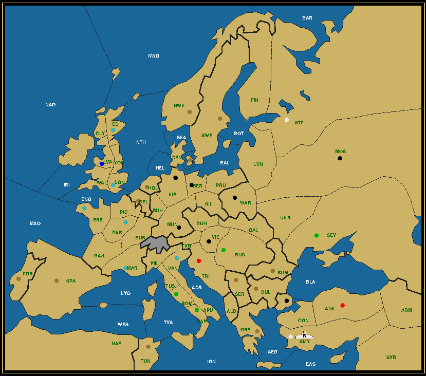
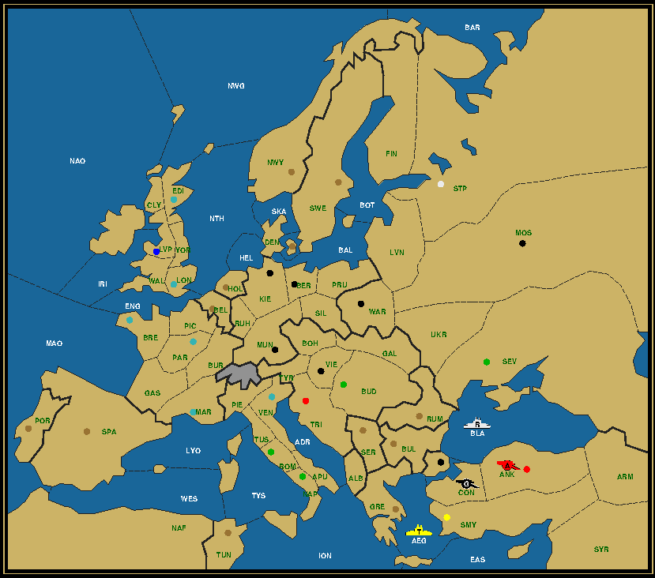

Last Man Standing is a puzzle on the Diplomacy board, whereby the whole board gets reduced to a single unit. This unit must reach its final destination in a mere four game years, without any power capturing any neutral centers and with all powers still possessing at least one unit at the end of the second year. Your goal is to reconstruct the complete game history from the map given. For more details, read the LMS Roll Call. Today we're going to attack Great-Britain. But not in a Manchester concert hall, God forbids. Ours will be a bloodless conquest, played out on a harmless board or its electronic equivalent. For once we're not going to start off with the industrious army Liverpool coming out on top. I think we've seen enough of him. Instead we're reversing the trend by making Liverpool the final destination. And not once, but twice, because when blue collar workers take a holiday, they don't quibble on the length. Mission: The Industrial RevolutionArmy Constantinople to Liverpool, After Winter 1903 Austria (0/5) Ber Bud Tri Vie War England (1/1) F Wal / Kie France (0/5) Bre Mar Mun Par Ven Germany (1/1) F Nth / Lvp Italy (1/3) F Lon / Lon Nap Rom Russia (0/1) Mos Turkey (1/6) A Edi / Ank Con Edi Sev Smy Stp As is traditional, the first map shows the situation after the Winter of 1903. The starting position is still the same as always. Ok, so, Liverpool is already no longer English? Leave it to the Germans to mess with the British world view as the preeminent nation on the world stage at the turn of the century. Mission: Conquest of BritainItalian Army to Liverpool, After Winter 1904 Austria (0/6) Bud Mun Stp Tri Vie War France (0/4) Bre Lon Mar Par Germany (0/1) Ven Italy (1/5) A Lvp / Edi Kie Lvp Nap Rom Russia (0/1) Ber Turkey (0/5) Ank Con Mos Sev Smy Rome launches another successful invasion of Britain, together with their Gaul subjects. No need for a Hadrian wall this time, as Scotland is equally hospitable to the Roman phalanx. The only distraction is again those bloody Germans, who couldn't resist invading the north of Italy. Wipe them out, Caesar! Report: Father of Turks — Army Liverpool to Ankara
Army Liverpool to Ankara, After Winter 1903 England may be a true island, but Turkey on this map is pretty much a peninsula. The thickness of the Balkan centers makes it impossible to let an army traverse them on its own without gaining a neutral center in the process, a big no-no in the standard LMS setting. That means that the only useful land connection between Turkey and Europe is the border between Armenia and Sevastopol. It's this connection that we exploit to guide army Liverpool in 1904 to Ankara. Who else crossed this border? Not the French army in Armenia. France owns Smyrna, which it must have taken in 1902. The only way to accomplish that is to move through Italy, either departing Venice in Spring through Adriatic, Ionian and Aegean or Eastern Med, or Apulia in Fall, which would only require two fleets. Since fleet Ankara needs to appear in the Black Sea at some point, the two fleet solution looks more convenient. Especially since it allows to roll over an Italian army strolling around the Apulian countryside. Turning our attention North, we see that France did not take Munich. But it did conquer Edinburgh and not the more accessible London. There's always the possibility that France also took London and later lost it again to England, but let's go with the premise that only Edinburgh was taken. This could either be done with fleet Brest or army Paris. An easy choice, given that the army can take the dot already in the first year by way of a convoy through the Channel and the North Sea, resulting in one English fleet to disband. Where does that leave army Liverpool? The first center to reach is St. Petersburg. But this can't be accomplished in 1901, at least not without a fleet on St. Petersburg's north coast. Landing in Norway is forbidden until Spring to prevent taking a neutral center. The army could move to Clyde or Yorkshire to prepare for the Spring convoy. But since it can be directly convoyed into St. Petersburg once the fleets are in place, it might as well take the opportunity in Spring 1902 to attack and get rid of the French army in Edinburgh before convoying in Fall. We still have a massive number of Northern fleets to take care of. Most of them are starting out too far away to reach Ankara within the allotted timeframe. We need to assign or raise two snipers to do the culling operation. One could be the Turkish fleet Ankara. But that fleet has the opposite problem. It's better to use local resources and these are available in the form of the Russians, the assistant sniper power. By building a second fleet on St. Pete's north coast, when its south coast fleet is already heading for the North Sea we can drive the flock from both ends and meet somewhere in the middle. There are two conditions for this plan to succeed. The first one is to be able to build that second fleet. This may be harder than it sounds, because Russia is actually going to lose Warsaw in the first year, as Germany aims to be in Moscow in the second year and you definitely don't want two Germans in the middle of the board with few snipers in sight. The second condition is that the two centers captured in 1903, Sevastopol and Constantinople, are both Russian. To satisfy both conditions we use the Turkish fleet to convoy army Moscow to Constantinople, while at the same time the two Turkish armies dislodge fleet Sevastopol in Armenia. Russia stays thereby at four centers with only three units left and is thus entitled to a build. Now it's merely a question of executing the grand strategy, filling in the details as we go. 1901. While the British still deliberate on a possible Gallipoli campaign, the Russians are invited to a treaty in the Ottoman capital on condition that they scuttle their Black Sea fleet, which they promptly do. Italy proposes a Lepanto and when no-one wants to listen ambushes a German army in Bohemia. 1902. After disposing of the French invader, army Liverpool glides through Arctic waters to meet up with the German Barbarossa campaign, while Russia harasses the invaders from behind. Meanwhile newly minted French Crusaders visit the Citadel of Antioch on their way to the Promised Land.  Army Liverpool to Ankara, After Winter 1903 Click to view the complete history in a separate window Season: 1903. The Neapolitan fleet, like the Venetians and Genovese before them, find themselves not welcome in Constantinople. They merely came to visit the Topkapi Palace, they lament, not to be stowed away in its cellars. 1904. Glory to the British flag, once more. You can hear "God save the King" being played in front of a statue of Atatürk. Perhaps for the last time? Report: The Great Fire — Fleet Sevastopol to Smyrna

Fleet Sevastopol to Smyrna, After Winter 1904 Turkey gets lots of assistant snipers in the first two years on this map. Russia, Austria and England, they all end up with one or two centers left and most of their home centers taken. In fact they're so plentiful that we won't even need any of the Turkish armies. With so many dots colored, you would think that the solution is as straightforward as can be. Still, it would do well to reason back from the end to see if we can determine the positions a year earlier. Two centers were occupied to account for the two Russian fleets that we can suspect to have executed the culling operation up North, among Ankara, Constantinople and Sevastopol. We can exclude Sevastopol, because an army there would move to Armenia first, where fleet Sevastopol would not be able to support an attack on. The two other raiders were therefore a German army in Constantinople and an Austrian army or fleet in Ankara. Where was fleet Sevastopol at that time? Clearly for Turkey to be able to guide fleet Sevastopol to Smyrna it must either be in the Aegean or Armenia. Notice now that the German army moved from Moscow to Constantinople in just one year. That can only be done if it was convoyed through the Black Sea. The fleet that executed the convoy could not be a sniper, like a second Turkish fleet, that got disbanded, because only two centers get taken in 1903 and these serve exclusively to remove the sniper fleets up North. You guessed it, that Black Sea fleet can only be fleet Sevastopol. To bring this fleet from the Black Sea to Smyrna requires Turkey to have a fleet in the Aegean. Which means the map needs to look like this:

Fleet Sevastopol to Smyrna, After Winter 1903 The most pertinent question now is: In which order should the Turkish centers be taken and by whom? Clearly it would be preferable if Russia could claim both centers in 1901, as it can do by moving the fleet through Armenia and convoying the army across the Black Sea. Five centers would allow to build the fleet on St. Petersburg's north coast without needing to get rid of another unit first. The problem is though that we need sweepers, two of them, to clean up and remove the German army in Vienna and the French army in Venice. If army Warsaw is the first sweeper, the one remaining Austrian army should be the assistant. But how then will this Austrian unit be able to come over to Ankara when it's still stuck in Tyrolia? It can't, which is why Austria should capture one forward center (Constantinople) and lose it to Russia in 1902. This allows it to disband that Tyrolian army, while its remaining army is already in Turkey. Russia meanwhile sacrifices one army in Warsaw, while positioning its other army for the 1902 sweep. Let's see this through. 1901. Home, sweet home. No less than seven home centers in five different nations change hands. 1902. The dance of the dervish. The Austrian army flicks through Anatolia in search of evidence of the Armenian genocide. 1903. The Cossacks' last dance. With a convoy to Constantinople to chase down the Cossacks, the Bolsheviks repay their debt to Germany for repatriating Lenin in a boxed car to start the Revolution. They promptly turn St. Petersburg into Leningrad. 1904. The triumphant arrival of a Sevastopol fleet in Smyrna prompts the Greek inhabitants to invent a new line dance and call it the Sirtaki. Uppercuts and countdownsThe variations on Sherlock Holmes' Last Man Standing Up (all neutral centers captured) solution deserves its own countdowns page. Complete with a surprise extra.
|